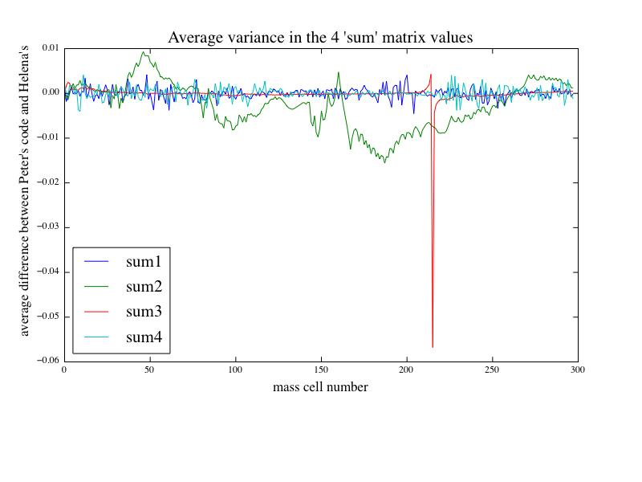
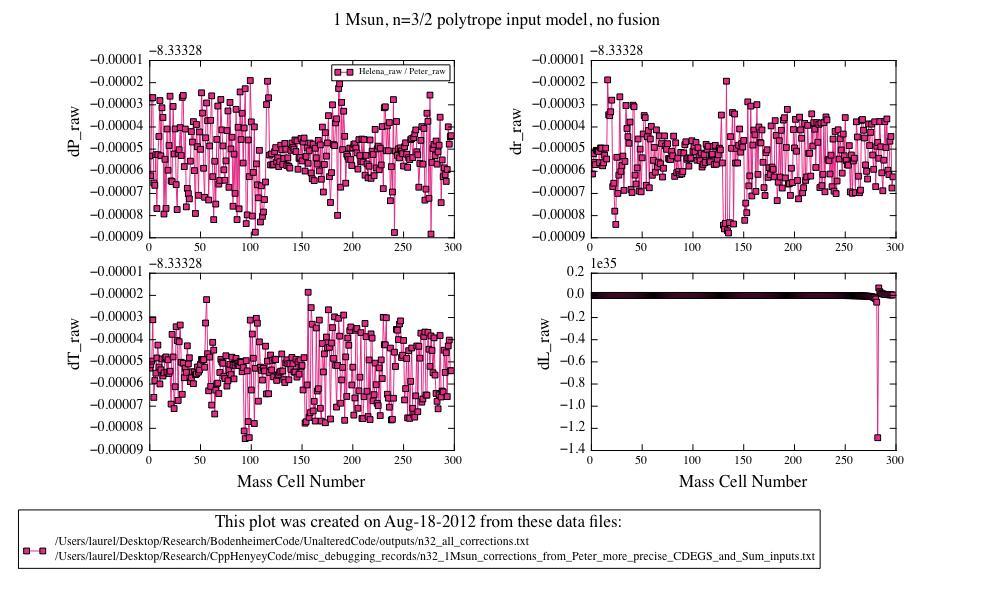

Figure
2
Date & Time: Aug. 18, 2012
Location: campus
Computing context: MachoMac
(/Desktop/Research/CppHenyeyCode/src, /Desktop/Research/BodenheimerCode/UnalteredCode)
From last time:
Switch
Helena's Henyey solution subroutine back to using the gauss-jordan
elimination method for matrix inversion (instead of the recently
installed 4x4 algorithm) and see if that gets the n=2/3 polytrope
1Msun model corrections to agree with those calculated by Peter's
code.
Done. Gives
the exact same correction values that using the Cramer's rule
inversion algorithm produces. So, changing the specific inversion
algorithm isn't the solution.
Correction values from this run with the gauss-jordan elimination inversion method are stored in CppHenyeyCode/misc_debugging_records/corrections_from_matrixInvert.txt
Note: modifiedHenyeyMatrixSoln subroutine (in Helena) does NOT call any lookup tables, so the lookup table precision problem ISN'T what's causing the codes to calculate different correction values.
Hints from Greg: Numerical recipes, ill-conditioned matrices (NR apparently has info on how to finess those), "pre-conditioning" a matrix, singular value decomposition?? (may only be worth it for matrices larger than 4x4, but worth keeping in mind)
Even with the S^-1 values from Peter's code, it seems like Helena is still producing dX values very different from Peter's.
To Do Today:
Make sure I'm reading in and out the dX, S^-1, etc. values that I think I am.
Figure out what is causing Helena and Peter to get such different results given the exact same inputs.
Check the Sum matrix
values between the two codes (given the same S/S^-1/CDEG input
values) and see if they differ substantially. Done. See
Figure1 below for results. The short answer is, they do differ,
but not by much.

The four variables plotted above represent the
following equation:
(abs(Peter(sumN value)) - abs(Helena(sumN value))) /
average of abs. of Peter and Helena sumN value
This gives a measure of how the two codes' results
vary (e.g. by what factor in a 1000). The largest difference is
in the luminosity 'sum3' values, which differ by a maximum of 6
parts in a hundred, which isn't *that* huge of a difference.
Figure
1:
Although, the differences between the dX values that the
two codes are generating from the same S/S^-1/CDEG values are
quite substantial on their own... I think. Actually, let's check
that. Done. Yep, they're quite different. The raw
corrections vary by several orders of magnitude between the
different codes. See Figure 2 for results.
Figure
2
What's causing this big difference in the dX value results, when I'm feeding Helena the same S and S^-1 matrix values (not to mention the same CDEG values and raw variable values) that Peter's code is using??
Try feeding Helena the same Sum matrix values in the
modifiedHenyeyMatrixInversion subroutine, and see if that
eliminates the discrepancies? Done. It doesn't.
Compared the A matrix values from the two codes, and they disagree (even with the same S, S^-1, CDEG, and variable values). The difference is most pronounced at the innermost mass cell.
Maybe it's caused by the lack of precision in the
printouts of the cdeg values from Peter's code. Try this again,
with full precision CDEG printout values (read into Helena), and
see if that erases the discrepancies between the two codes.
Done. Still getting significant differences between the two
codes' A matrix values at the innermost mass cell.
Need to figure out what's causing this problem at such a
specific place in the model. Done. It turns out to
have been a careless error. I printed out the HA matrix from
Peter's code (which contains the B|A matrix values after it gets
sent to the GIRL subroutine) before GIRL had been called on the
first mass cell. When I corrected that error, all differences in
the A values between Peter's code and mine turn out to be on the
order of one part in 10^5. I think that's set by the precision
limits of 'cout' in printing numbers in Helena; it's probably an
artifact of the C++ i/o I'm using to get these numbers into
python for comparison.
(Come back to this one later, if necessary) Also, make sure to get full-precision printouts of the var vals from Peter's code and feed those into Helena. See if that makes a difference in the dX value results.
Now that I've got the A matrix values sorted out, let's
see if the two codes can now produce the same dX values.
Done. Nope, there's still this more-or-less constant factor of
8.33328 between Peter's values and Helena's (the latter are the
bigger values). See Figure 3 for results.

Plots of the dX Helena values / dX Peter values for all
four main dependent variables. Notice the -8.3328 value at the top
of the y-axes. This means that the y-values listed are actually
added to that constant factor.
Figure
3:
Could this factor of 8.33328 between the two codes' results be due to the same precision write-out limitations on the dep. var values written out by Peter's code? (I don't think this is terribly likely, but it's worth checking.)
The A values are equal-ish at the outermost mass cell. The outermost dX values should be the same as the outermost A values, so something must be happening in Peter's code to change the dX values at the outermost mass cell.
Perhaps there's some
sort of rescaling going on in his code at that outermost mass
point? Check the "cf" variable in his Henyey
subroutine for this. Done. Yes, it's due to the "cf"
rescaling parameter in Peter's Henyey subroutine.
Next question to
answer is: how and why is his code determining what that cf value
should be? Done...sort of. It looks like he's got a
pragmatic (rather than physically driven) process set up to scale
the dX values by the cf parameter. It looks like it might be
optimized to apply smaller or larger corrections depending on the
number of times the model has iterated through the Henyey
process, on what the minimum number of allowed iterations is, and
possibly some other conditions that I'm not grasping. I don't
understand, though, why you've got to do all of that when the
scaled corrections from Peter and Helena always end up being
pretty much the same. In other words, the limiting factor on the
dX values from either code seems to be the dXmax thresholds that
the user sets, rather than the cf value that Peter's code is
somehow relying on.
I should talk to Greg about this, and possibly then also to Peter, about the rationale behind this cf business.
In any case, I can
just set cf = 1.0 in Peter's code, and then compare its dX values
to Helena's. Done-- changing cf = 1.0 in Peter's code,
and recompiling it.
For the n=3/2
polytrope 1 Msun model: do they now agree? Done.
Mostly, but not totally. See Figure 4 for results.

Figure
4
For the 1 Mjup model: do they now agree?
Look at the comparison between Peter's and Helena's S^-1 values.
Find the mass cell numbers where the differences are largest
Print out Helena's (and Peter's?) S matrices at those locations
See what the dynamic range of values in those matrices is/are (figure out if that's what's causing the differences between the two codes' results)
If the difference is due to the ill-conditioned-ness of the S matrices, go on the the step below.
Test both Helena's matrix inversion algorithms (MIAs) on matrices with varying dynamic ranges, to see where they start to break down.
See if Peter's [S | x] --> [S | S^-1 * x] method (which I'm 80% but not 100% sure is what that GIRL subroutine of his is doing) truly is more numerically stable with these ill-conditioned-ish matrices.
If so, implement it in my code. Or perhaps, test its robustness by implementing it in my code and seeing if that'll make Helena and Peter's code produce the same correction values.